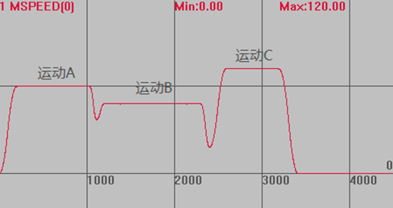
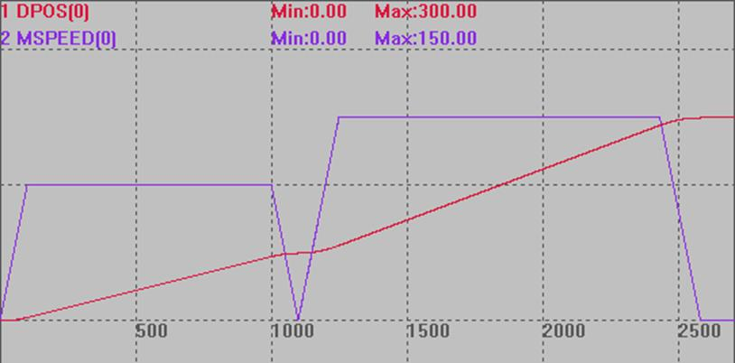

|
类型 |
多轴运动指令 |
|
描述 |
用于设置每段运动的运行速度、起始速度和终止速度。
多轴运动指令有对应SP运动指令，此时可以使用轴参数FORCE_SPEED 、STARTMOVE_SPEED和ENDMOVE_SPEED 来设置每个运动的速度、起始速度和终止速度，当不需要设置每个运动速度时，不需要使用SP指令。 |
|
语法 |
SP指令有：MOVESP，MOVEABSSP，MOVECIRCSP, MOVECIRCABSSP，MHELICALSP，MHELICALABSSP，MECLIPSESP，MECLIPSEABSSP，MSPHERICALSP。
FORCE_SPEED 、ENDMOVE_SPEED 和STARTMOVE_SPEED会随SP运动指令写入运动缓存区。 |
|
适用控制器 |
通用 |
|
例子 |
例一 BASE(0) DPOS=0 ATYPE=1 UNITS=100 ACCEL=1000 DECEL=1000 SRAMP=100 MERGE=ON '打开连续插补 SPEED=100 '运行速度100 FORCE_SPEED=80 '限制速度80 STARTMOVE_SPEED=60 '起始速度60 ENDMOVE_SPEED=30 '终止速度30 TRIGGER '自动触发示波器 MOVE(100) '运动A，不使用SP限速 MOVESP(100) '运动B，使用SP限速 FORCE_SPEED=120 '限制速度120 ENDMOVE_SPEED=30 '终止速度30 MOVESP(100) '运动C，使用SP限速
速度轨迹 MSPEED(0)垂直刻度100  不使用SP指令时，运行速度为SPEED，使用SP指令后，运行速度为FORCE_SPEED。 当STARTMOVE_SPEED和ENDMOVE_SPEED同时设置时，STARTMOVE_SPEED生效。
例二 DPOS=0 ATYPE=1 UNITS=100 ACCEL=1000 DECEL=1000 SPEED=100 '运行速度100 SRAMP=100 's曲线 FORCE_SPEED=150 '限制速度120 TRIGGER MOVE(100) '运动速度SPEED MOVESP(200) '运动速度FORCE_SPEED
运动轨迹 DPOS(0)垂直刻度200 MSPEED(0)垂直刻度100  |
|
相关指令 |